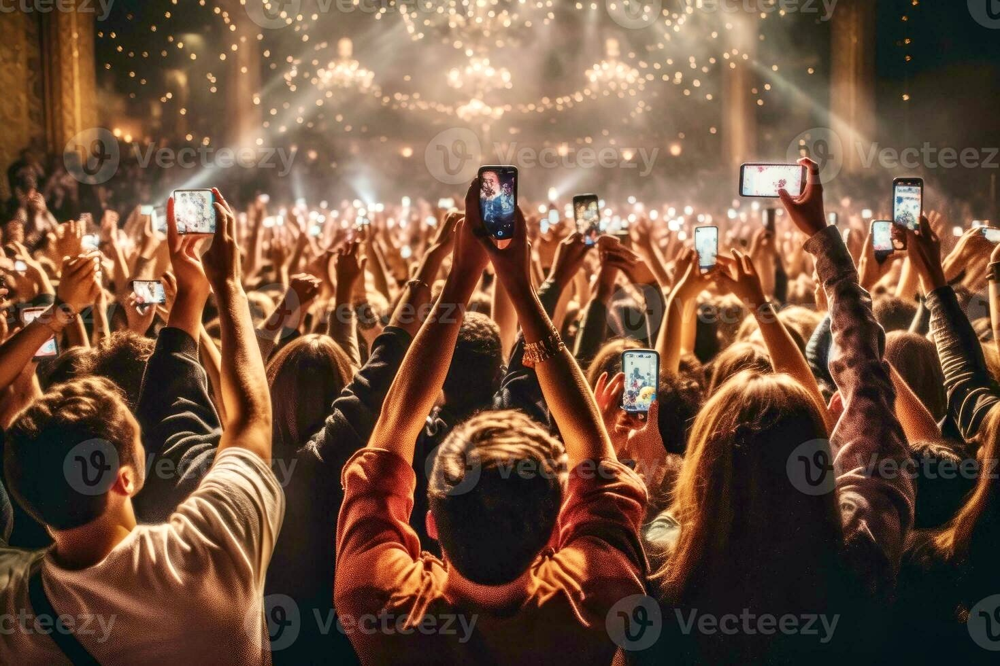

All the World's a Stage
Analysis · Personal Essay | Echo Truth Hub | April 2026
By Mímir Mímisbrunnr
Before he had words for any of it, he already knew where to go.
His mother found the crib empty one morning, the household quietly searched, and the fear that visits every parent in that silence moved through her like cold water. Then someone looked toward the beach.
He had navigated his way out of a high-barred crib, how, remains a mystery to this day, and made his way, alone, to the shore. He sat where the sand flattened and the surf began its cadence, still as a small monk, watching the sunrise do what sunrises do whether anyone is watching or not.
No drama. Just an eye for a view.
That, in essence, was the basis of his being to be.
There are people who are drawn to the edge of things. Not out of restlessness, but out of the need to see clearly. The border is where what is true becomes visible. It always has been.
This is an attempt to describe what that vantage point looks like now, from here, in this particular moment in human history. It is not a warning. It is not a verdict. It is what one set of eyes has noticed, offered to whoever finds it useful.
All the world's a stage. We always knew this. What nobody anticipated was that we would all become so occupied documenting the performance that we forgot to simply be in it.
The Efficiency That Cost Us Something
A sleek digital workspace on one side. An empty chair, cold coffee, phone face-down on the other. The efficiency is real. So is what is missing.
Digitalisation did what it promised. Work got faster. Information became instant. The friction of distance collapsed. And somewhere in the middle of all that convenience, a quieter thing happened, the texture of human interaction began to be renegotiated, term by term, in favour of scale.
It did not vanish. It was redacted. Actively, selectively, in the name of efficiency and optimisation, the warm and imprecise parts of human exchange were identified as costs and removed. What replaced them was smoother, faster, and entirely without soul.
Digitisation stacked in both directions. It took away certain burdens and replaced them with new ones nobody asked for, the endless administration of the self, the always-available expectation, the notification that arrives before the thought.
This is not nostalgia. It is observation.
The Algorithm in the Room
A chatbot interface on a cold blue screen, corporate, polished, smiling in the way that only software smiles.
Companies and organisations have always understood, at some level, that connection drives commitment. The handshake, the familiar voice on the phone, the person who remembered your name, these were not accidents. They were the product of a species that evolved to read other faces and decide, in a fraction of a second, whether to trust.
What artificial intelligence offers in their place is a reasonable facsimile. Efficient. Available at all hours. Never tired, never distracted. And completely incapable of the thing it is pretending to do.
The way we interact with entities, companies, institutions, services, is being actively redacted by the development of artificial intelligence. What once carried the possibility of relation is being transformed, quietly and at scale, into an abstract experience.
On a personal note, and this piece allows for one, there is no interest in conversing with an algorithm about feelings toward a company. It becomes transactional immediately. Fine. Tell it what needs to be done, remove the performance of warmth, get it sorted. You are a tool. There is no shame in that. But there is also no intimacy, no recognition, no moment where one human being signals to another that they have been heard.
Abstract is the right word for what remains. The choices made in that space, individually, collectively, daily, define not just how we transact, but gradually, who we are becoming.
The Tell
Two people in conversation. One present. One retrieving. The gap between retrieval and thought, made visible.
Here is something worth noticing.
A growing number of people in daily conversation carry the fingerprints of a single AI agent they have given themselves to entirely. You can hear it before you can name it.
They speak with fluency. Opinions ready, references prepared, a certain polish to their responses. And then something genuine is asked, something off the prepared path, something that requires not retrieval but thought, and they fall into a sudden silence that says, clearly: I haven't looked that up yet.
It is the difference between retrieval and thought. And it is not always visible. But it can be heard.
We saw this pattern with social media. We saw it with search engines. We saw it at the very beginning of the internet, when people began outsourcing their memory to a search bar and losing the habit of sitting with not knowing. The tool changes. The dynamic repeats.
The challenge this creates is subtle and cumulative. When a growing portion of what people say to each other is effectively quoted rather than thought, conversation stops being an exchange and becomes a transaction of cached content. The warmth is still there. The curiosity has been replaced.
The Biology of the Border
The meeting of the Atlantic and Pacific, two distinct bodies of water visibly touching, turbulent at the border, maintaining their separate character on either side.
There is a useful concept in microbiology called quorum sensing. Bacteria do not act collectively until a threshold number is reached, a minimum viable presence. Once that threshold is crossed, the entire colony shifts behaviour simultaneously. No leader. No decision. No meeting. Just critical mass triggering collective function. Watch a murmuration of starlings, thousands of birds, no visible signal, no one in charge, turning as a single body in the sky. The threshold has been crossed. The same logic. A different scale.
We may be more like this than we prefer to admit.
The notion of a minimum prime number for social function appears across disciplines. Robin Dunbar mapped it in his concentric circles of trust, the numbers of people a human mind can maintain genuine relationship with at each level of closeness. They are better understood as fluid, expanding or contracting with the willingness of those within them to coexist. Willingness is the variable. Not capacity.
Any species needs a threshold. Below it, the signals that make collective behaviour possible simply do not fire. Above it, something like coherence becomes available, not guaranteed, but possible.
Here is where it gets honest.
Collective sentiment, the idea that a community, a society, a species can reach genuine unified feeling, is not the destination. It never was. The Pacific and the Atlantic will never completely mix. They meet at a border that is turbulent precisely because the density differential is real. Distinct salinity. Distinct temperature. A halocline that holds them separate even at contact. And the border is where all the interesting biology happens. Not despite the tension. Because of it.
The freethinker's position is not that all differences can be resolved. It is that flavours can be mixed to a certain point, and that the mixing produces something new at the border without requiring either side to stop being what it is. Yin and yang. Enso. The circle that holds both and insists on neither.
A global community is only viable when there is an existential external threat that all can relate to. Short of that, any subjective societal narrative of its own conviction will produce friction. This is not failure. This is structure. The oceans do not fail because they do not merge. They function as a planetary system because they maintain their distinct character while managing the border productively.
The sentinel's function, the value of the watcher at the edge, is not to resolve this. It is to read it. To notice when the turbulence at the border tips from productive friction into cohesive conflict. Or alternatively, into cohesive development. The sentinel is the nerve ending. Not the judge. Nerve endings do not have opinions about pain. They report it. What the organism does with that signal is a separate question.
Subjective by definition, yes. The sentinel watches from within the tribe it belongs to. That is not a flaw in the design. It is the design. What distinguishes the sentinel is not objectivity. It is the willingness to see clearly what is actually there, rather than what the consensus has agreed to notice.
The Moment That Wasn't Saved

A crowd filming a moment on phones. One person simply watching. The contrast does not need to be laboured.
People can reach each other now with almost no effort. The logistics of connection have never been simpler. And yet the first impulse, when something worth sharing happens, is to reach for the phone. Not to call someone. To document. To log the moment in bits and bytes, frame it for a feed, release it into the current of other people's endless scrolling.
The grey matter, the actual instrument built over millennia to absorb experience, to store it, to let it settle into something lasting, waits. While the registration happens. While the moment is transferred from lived to uploaded.
If it is not registered it did not happen. This is the quiet operating assumption of a growing portion of daily life. And it is not a small thing. The registration of experience has quietly replaced the experience of experience. The sense of belonging and connection that people are simultaneously, desperately seeking is being lost precisely in the act of trying to capture it.
People tend to get more distant and dyslexic about their own desires. The tools exist. The reach is there. And still, the distance grows.
The Quiet Rebellion
A basic handset next to a switched-off smartphone. The choice has been made. The quiet is deliberate.
Generation Z did not arrive at dumb-phones by accident.
They were born into the full noise of it, the non-personal stimuli, the optimised feeds, the always-available everything that adds no true value to a life being lived. And some of them, the ones paying attention, looked at it and arrived somewhere clear: living has become a task, and I would rather just live.
There is something worth respecting in that. It is not a rejection of technology. It is a rejection of "expected" performance. A refusal to let the registration become the point.
Every generation produces this observation about the one that follows it. Every generation assumes it is the first to notice the acceleration. This does not make the observation wrong. It makes it old. Old, recurring, and apparently necessary to keep making.
What is different now is the speed. The quorum threshold for collective behaviour shift has always existed. What digital saturation has done is compress the timeline. The signal moves faster. The colony responds faster. Whether it responds well is the open question.
The Cost of Seeing It
A single figure positioned at a slight remove from the crowd. Watching the group rather than participating.
There is a particular kind of person, and this piece neither diagnoses nor celebrates them, merely notes their existence, for whom these patterns, once visible, cannot be unseen.
You hear it in the conversation that drops when something genuine is asked. You notice it in the room where everyone is present and nobody is there. You recognise the cached response the way you recognise a dubbed film, the mouth moves, but something is slightly off. Everything becomes, at intervals, surrealistic. Until another person who reads the room the same way appears, and the conversation that follows has a quality that is almost startling in its difference.
The sentinel is not a type to be envied. The nerve ending that is most sensitive is also the one that registers pain most acutely. The value of the position is in the signal, not the experience of sending it.
It gets more challenging, honestly, to talk to most people when you are tuned to notice these things.
This may say something about the observable world. It may say something about the observer. In all probability, both.
The invitation here is not agreement. It is the frontier of the oceans colliding. You do not have to like it or accept it. It is just there. And if we cannot talk about what actually makes us tick, the carnal, pre-rational, quorum-sensing creatures that we are beneath all the language, then what exactly are we talking about.
Coda
An empty theatre stage. A single spotlight on the boards. The curtain falling. What remains is the stage itself, indifferent, ready for the next performance.
All the world's a stage. Jacques said it without pity, just precision. He was not calling for a return to something better. He was noting what is. Seven ages, each one trading one kind of performance for another.
We have added an eighth: the age of the documented self. The one where the act of living and the act of recording have become so entangled that people are beginning to ask, quietly, which one is supposed to be real.
He sat on that beach as an infant because something in him already understood that the view requires a witness. Not a camera. Not a caption. A pair of eyes and whatever that grey mass does when it is simply allowed to receive.
The waves did not perform for him. He did not perform for the waves. And that, for a moment, was enough.
The choices made daily, individually, collectively, quietly, in the question of what is worth actually experiencing versus what is worth registering, define not just how we live but who we are becoming.
That is not a warning. It is just what is playing, right now, on the stage.
#TruthWithTeeth